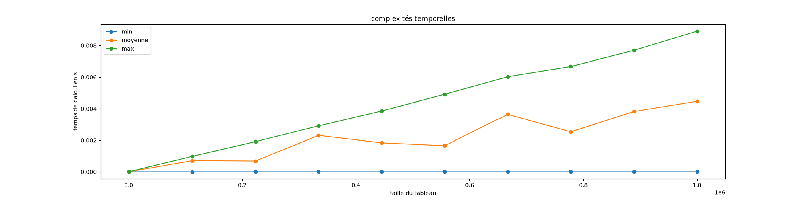

Complexité en moyenne
Lorsque le nombre d'opérations d'un algorithme varie fortement selon ses entrées ou que l'on veut mesurer physiquement le temps mis par un code pour être exécuté, on a coutume d'utiliser la mesure de complexité en moyenne qui permet de connaître le nombre d'opérations espéré pour un tableau quelconque de taille donnée :
La complexité en moyenne d'un algorithme est le nombre moyen d'opérations nécessaires pour se terminer par rapport à toutes les entrées de mêmes paramètres.
Si le paramètre de calcul de la complexité est la taille des entrées de l'algorithme, ce qui est (très) souvent le cas, la complexité en moyenne sera le nombre moyen d'opérations utilisées pour toutes les données de même taille.
Calcul de la complexité en moyenne
Soit $A$ un algorithme dont on veut calculer la complexité par rapport au paramètre $n$ (par exemple la taille des données). Si $\mathcal{E}_n$ est l'ensemble contenant toutes ses entrées de paramètre $n$ et s'il faut $N(e)$ opérations pour exécuter l'algorithme $A$ avec l'entrée $e$, on a :
- la complexité $C_\max(n)$ de l'algorithme vaut $C_\max(n) = \max \{N(e) \mid e \in \mathcal{E}_n\}$
- la complexité minimum $C_\min(n)$ de l'algorithme vaut $C_\min(n) = \min \{N(e) \mid e \in \mathcal{E}_n\}$
L'espérance de la complexité, c'est-à-dire la complexité attendue ou normale si l'algorithme est exécuté pour une entrée au hasard, est appelée complexité en moyenne.
Fixons nous les idées en supposant que l'on possède un algorithme $A(e)$ dont on connaît la complexité $C(n)$. Ceci signifie que : $C(n) = \max_{\mathcal{E}_n}(N(e))$ avec :
- $\mathcal{E}_n$ l'ensemble des entrées $p$ associées au paramètre $n$,
- $N(e)$ le nombre d'opérations effectuée lors de l'exécution de $A(e)$.
La complexité en moyenne de l'algorithme est alors l'espérance de $\mathbb{E}[N]$ où $N(e)$ est la variable aléatoire qui à chaque entrée $e$ associée au paramètre $n$ de la complexité.
On pour calculer une espérance il faut connaître la probabilité d'apparition de chaque valeur, on a alors la définition formelle suivante :
La complexité en moyenne de l'algorithme $A$ pour une entrée de paramètre $n$ est :
Avec :
- $\mathcal{E}_n$ l'ensemble fini des données de paramètre $n$,
- $p_n(e)$ la probabilité de choisir $e \in \mathcal{E}_n$ comme entrée de l'algorithme
- $N(e)$ le nombre d'opérations utilisées par l'algorithme pour se terminer avec l'entrée $e$.
Si l'on n'a pas de modèle a priori, on considérera que chaque donnée est équiprobable : chaque entrée $e$ de $\mathcal{E}_n$ a la même probabilité d'être choisie :
Si l'ensemble $\mathcal{E}_n$ des entrées de paramètre $n$ est infini (mais tout de même dénombrable puisqu'on est en informatique), on utilise le fait que $N: \mathcal{E}_n \rightarrow \mathbb{N}$ est une variable aléatoire discrète et peut donc s'écrire pour une somme d'indicatrices :
Le calcul de la complexité en moyenne étant l'espérance de $N$ on a deux moyens de la calculer :
La complexité en moyenne d'un algorithme est l'espérance de la variable aléatoire qui à chaque entrée de celui-ci associe le nombre d'instructions mises pour l'exécuter.
Intérêt
Pour tout algorithme, on a les inégalités suivantes :
La complexité en moyenne nous donne le nombre d'opérations attendu si on exécute l'algorithme (et qu'on n'a ni beaucoup de chance (pour tomber sur la complexité minimale) ni pas de chance du tout (pour tomber sur la complexité maximale)). La complexité en moyenne nous indique, pour un modèle de données, si les cas extrêmes (complexité minimale et maximale) arrivent fréquemment ou pas :
- si la complexité maximale est égale à la complexité en moyenne alors la complexité maximale arrivera souvent
- si la complexité minimale est égale à la complexité en moyenne alors la complexité minimale arrivera souvent
- si les trois complexités sont différentes, les cas minimum et maximum arriveront rarement.
Pour pouvoir calculer $C$ effectivement, il faut connaître les $p_i$. Comme on n'a pas de modèle a priori, on va considérer que chaque tableau de taille $n$ a la même probabilité d'être choisi et donc que la position de x dans le tableau est équiprobable : $p_i = \frac{1}{n + 1}$ pour tout $0 \leq i \leq n$. On a alors :
Et comme $\sum_{i=0}^{i = n}(i + 1) = \frac{(n + 2)(n + 1)}{2}$ on en déduit que :
Exemple 1 : recherche d'un élément dans un tableau
Reprenons l'exemple de la recherche d'un élément dans un tableau :
algorithme recherche(T: []int, x: int) → bool:
pour chaque e de T:
si e == x:
rendre Vrai
rendre FauxCommençons par calculer ses complexités.
Montrez que, si $n$ est la longueur du tableau, on a que :
- la complexité (maximale) de l'algorithme
rechercheest $\mathcal{O}(n)$, - la complexité minimale de l'algorithme
rechercheest $\mathcal{O}(1)$.
corrigé
corrigé
Toutes les instructions de l'algorithme sont en $\mathcal{O}(1)$ (un test et un retour), sa complexité viendra du nombre de fois où ou la boucle tant que est exécutée :
- la complexité minimale sera atteinte si elle n'exécutée qu'une fois (si
xest le premier élément du tableau) : $\mathcal{O}(1)$ - la complexité (maximale) sera atteinte si on exécute la boucle $n$ fois (on parcourt tout le tableau sans trouver
x) : $\mathcal{O}(n)$
Si l'on note $\mathcal{E}_n$ l'ensemble de tous les tableaux de longueur $n$, il y en a une infinité. Notre calcul de la complexité en moyenne est donc ardu car il est impossible de trouver la probabilité de choisir 1 élément parmi une infinité. Pour résoudre ce problème il faut partitionner $\mathcal{E}_n$ en un nombre fini de classes dont les valeurs de complexités sont les mêmes :
Pour calculer facilement une complexité en moyenne il faut pouvoir partitionner l'ensemble des entrées en un nombre fini de classes dont :
- la complexité est la même pour chaque entrée de la même classe,
- il est facile de calculer la probabilité qu'une entrée fasse partie d'une classe donnée
Pour notre problème de recherche, cette partition va correspondre à l'endroit où se trouve la valeur à chercher x dans le tableau T :
- si
xest à l'indice $0$ du tableau, il faudra $\mathcal{O}(1)$ opération pour exécuter l'algorithme - si
xest à l'indice $1$ du tableau, il faudra deux fois plus d'opérations que s'il était à l'indice $0$, donc $2 \cdot \mathcal{O}(1)$ opérations pour exécuter l'algorithme - si
xest à l'indice $2$ du tableau, il faudra trois fois plus d'opérations que s'il était à l'indice $0$, donc $3 \cdot \mathcal{O}(1)$ opérations pour exécuter l'algorithme - ...
- si
xest à l'indice $i$ du tableau, il faudra $i+1$ fois plus d'opérations que s'il était à l'indice $0$, donc $(i+1) \cdot \mathcal{O}(1)$ opérations pour exécuter l'algorithme - ...
- si
xest à l'indice $n-1$ du tableau, il faudra $n$ fois plus d'opérations que s'il était à l'indice $0$, donc $n \cdot \mathcal{O}(1)$ opérations pour exécuter l'algorithme - si
xn'est pas dans le tableau, il faudra $n+1$ fois plus d'opérations que s'il était à l'indice $0$, donc $(n+1) \cdot \mathcal{O}(1)$ opérations pour exécuter l'algorithme
L'ensemble $\mathcal{E}_n$ de tous les tableaux de longueur $n$ peut alors se segmenter en $n+1$ classes :
- les ensembles $\mathcal{E}^i_n$, pour $0 \leq i < n$, qui regroupent les tableaux contenant
xen position $i$ - l'ensemble $\mathcal{E}^n_n$, qui regroupe tous les tableaux ne contenant pas
x
La complexité en moyenne s'écrit alors :
On note $p_{i}$ la probabilité qu'a une entrée d'être dans $\mathcal{E}^i_n$ :
Ce qui donne :
Proposition
La complexité en moyenne de l'algorithme recherche est la même que la complexité maximale.
On peut comprendre ce résultat ainsi : si notre modèle est équiprobable, x va se trouver en moyenne au milieu de notre tableau, et donc il faut parcourir de l'ordre de $\frac{n}{2}$ éléments de T, la complexité en moyenne est de $\mathcal{O}(n/2) = \mathcal{O}(n)$ qui est la même que la complexité maximale.
On utilisera souvent ce genre de raisonnement si les données sont équiprobables : en moyenne il faut parcourir la moitié des possibilités avant de trouver la solution.
Algorithmie et aléatoire
Tableau aléatoire
TBD reprendre le max d'un tableau. Exemple surprenant (ca ne marche pas aussi bien à chaque fois) et qui nous permettra de montrer un modèle classique, le tableau aléatoire Tableau aléatoire parler de fisher-yates et du moyen de trouver des choses aléatoires en informatique. Notion de pseudo-aléatoire et de process physique pour l'aléatoire trouver des ref.
Fisher-Yates
Exemple 2 : nb max d'un tableau
Maximum d'un tableau
TBD supprimer tableau aléatoire d'ici.
On pourrait penser que l'on n'a plus rien à dire sur les algorithmes permettant de trouver le maximum d'un tableau d'entiers (on en a déjà une version itérative et une version récursive), mais si, si, il nous reste au moins un résultat intéressant à démontrer.
On va utiliser ici la version itérative de l'algorithme :
algorithme maximum(T: []int) → int:
ref m ← T[0]
pour chaque x de T:
si m < x:
m ← x
rendre mUn petit échauffement avant le vrai résultat :
Donnez les complexités minimale, maximale et en moyenne de l'algorithme maximum([]int) → int
corrigé
corrigé
- complexité minimale et maximale $\mathcal{O}(n)$ puisqu'il faut parcourir chaque élément du tableau et que le reste des lignes est en $\mathcal{O}(1)$
- la complexité moyenne étant forcément entre la complexité minimale et maximale elle est également en $\mathcal{O}(n)$.
Maintenant regardons combien de fois la variable m est affectée :
Donnez les nombres minimaux et maximaux de fois où la variable m est affectée.
corrigé
corrigé
La variable m est affectée dans tous les cas au moins une fois. De plus :
- si le tableau est trié par ordre décroissant,
mn'est affectée qu'une fois - si le tableau est trié par ordre croissant,
mest affectée à chaque itération, donc la longueur du tableau fois.
On s'intéresse à la complexité en moyenne de ce nombre d'affectations. Pour cela il faut se fixer un modèle probabiliste. On a a priori aucune restriction sur les valeurs du tableau mais comme ils ne sont utilisés qu'en comparaisons des autres valeurs du tableau on a pas besoin de considérer une infinité de valeurs. On peut alors utiliser le modèle classique du tableau aléatoire pour nos calculs
Définition et propriétés d'un tableau aléatoire
Un tableau $T$ d'entiers de longueur $n$ est un tableau aléatoire s'il résulte de la procédure suivante :
- on tire une permutation $\sigma$ de $[0 \, ..\, n-1]$ de façon équiprobable (la probabilité de choisir $\sigma$ est $\frac{1}{n!}$)
- $T[i] = \sigma(i)$ pour tout $[0 \, ..\, n-1]$
Dans un tableau aléatoire, toutes les valeurs sont différentes.
On utilise ce modèle par ce qu'il est simple à mettre en œuvre et à manipuler et convient pour les calculs de complexité en moyenne d'algorithme manipulant des tableaux d'entiers dont seuls les ordre relatifs entre valeurs importent (ce qui est presque toujours le cas) :
Si on a aucune information sur la répartition des nombres, on utilise par défaut le modèle du tableau aléatoire pour calculer des complexités en moyenne d'algorithmes manipulant des tableaux d'entiers tableaux d'entiers.
Ce modèle possède de nombreuses propriétés :
Proposition
Si $T$ est un tableau aléatoire, la probabilité que $T[i] = k$ vaut :
preuve
preuve
Parmi les $n!$ permutations de $[0 \, ..\, n-1]$ il y en a $(n-1)!$ telles que $\sigma(i) = k$ (on fixe une valeur parmi $n$, il en reste $n-1$ qui font ce qu'elles veulent). La probabilité d'obtenir une telle permutation est alors $\frac{(n-1)!}{n!} = \frac{1}{n}$.
Comme les valeurs d'un tableau aléatoires sont deux à deux différentes, la proposition précédente peut s'interpréter aussi comme :
Corollaire
La probabilité que $T[i]$ soit le $k$ plus petit élément d'un tableau aléatoire de longueur $n$ vaut $\frac{1}{n}$, quelque soit $k$.
Ce modèle véhicule de nombreuses propriétés l'on aimerait avoir pour un tableau de nombres quelconques. Familiarisez vous avec le modèle en en démontrant deux :
Si $T$ est un tableau aléatoire, montrez que l'on a :
corrigé
corrigé
Montrez que si $T$ est un tableau aléatoire on a pour tout $u \neq v$ :
corrigé
corrigé
Puisque les valeurs de $T$ sont deux à deux différentes on a : ${\Pr}[T[u] > T[v]] + {\Pr}[T[u] < T[v]] = 1$ et comme il y a autant de tableaux pour lesquels $T[u] > T[v]$ que de tableaux pour lesquels $T[u] < T[v]$ (échanger les valeurs de $T[u]$ et $T[v]$ est une bijection entre les 2 ensembles de tableaux) on a ${\Pr}[T[u] > T[v]] = {\Pr}[T[u] < T[v]]$.
Des deux conditions précédentes on en déduit ${\Pr}[T[u] > T[v]] = {\Pr}[T[u] < T[v]] = \frac{1}{2}$.
Algorithme pour trouver une permutation aléatoire
TBD
Nombre moyen de mise à jours
On va considérer que le tableau $T$ en paramètre est un tableau aléatoire de longueur $n$.
Donnez un argument pour lequel sous ce modèle la complexité en moyenne du nombre d'affectations est $\log_2(T.\mbox{\small longueur})$
corrigé
corrigé
Lorsque l'on met à jour $m$, c'est pour une valeur strictement plus grande. La probabilité que cette valeur soit $m+1$, $m+2$, ..., $T.\mbox{\small longueur}$ est la même, donc en moyenne elle sera de l'ordre de la moitié : $\frac{T.\mbox{\small longueur} + m}{2}$. À chaque affectation on divise par deux le nombre de valeurs plus grandes restantes : on le fait donc au maximum $\log_2(T.\mbox{\small longueur})$.
Il est important de retenir cet argument. Il va servir à de nombreuses reprises pour estimer des complexités en moyenne.
L'argument précédent est souvent suffisant, mais, pour cette fois, faites-le proprement pour vous convaincre que l'argument est bon :
Démontrez que pour un tableau aléatoire $T$, la probabilité que $T[i] = \max(T[:i])$ pour $0 \leq i < n$ vaut $\frac{1}{i+1}$.
Vous pourrez lier cette complexité au nombre de fois où $T[i] = \max(T[:i])$ pour $0 \leq i < n$ et au fait (démontré là) que $\sum_{1\leq i \leq n} \frac{1}{i}$ est équivalent à $\ln(n)$ en $+\infty$.
corrigé
corrigé
Pour construire une permutation $T$ de $[1 .. n]$ telle que $T[i] = \max(T[:i])$ il faut :
- choisir les $i+1$ premiers éléments de $T$ : il y a $\binom{n}{i+1}$ choix possibles.
- placer le plus grand des éléments choisis en 1. à la position $T[i]$ : 1 choix possible
- placer les $i$ éléments restants aux $i$ premières places : $(i)!$ choix possibles
- placer les $n-i-1$ éléments restants aux $n-i-1$ dernières places : $(n-i-1)!$ choix possibles
Il y a donc : $\binom{n}{i+1} \cdot 1 \cdot (i)! \cdot (n-i-1)! = \frac{n!}{(i+1)! \cdot (n-i-1)!} \cdot i! \cdot (n-i-1)! = \frac{n!}{i+1}$.
On en conclut que la probabilité $p_i$ qu'une permutation $T$ soit telle que $T[i] = \max(T[:i-1])$ vaut $\frac{\frac{n!}{i+1}}{n!} = \frac{1}{i+1}$.
De là, on peut définir $X_i$ la variable aléatoire telle que $X_i(T) = 1$ si $T[i] = \max(T[:i-1])$ et $X_i(T) = 0$ sinon. En notant $X(T) = \sum_{0\leq i < n} X_i(T)$, la complexité en moyenne $C_{\text{moy}}(n)$ pour une longueur $n$ de tableau vaut son espérance $\mathbb{E}[X]$ et donc :
On peut maintenant utiliser le résultat classique suivant (démontré ici) pour conclure :
Proposition
Retenez ce résultat, cela est souvent utile.
On en conclut que la complexité en moyenne du nombre d'affectations est en $\Theta(\ln(T.\mbox{\small longueur}))$ (chouette résultat, non ?).
TBD log vs n :
Pour se fixer les idées, et comme tous les log sont proportionnels, pensez à la différence entre :
- $t = 4.35 \cdot 10^{17}$ secondes qui est l'âge estimé de l'univers ($1.38 \cdot 10^8$ siècles),
- $\log_{10}(t) \simeq 17.65$ secondes qui est la durée moyenne que prend un mammifère pour faire pipi (on peut en effet estimer cette durée à 21s±13s selon une étude menée par Yang et Hu en 2014 et qui a été récompensée par le Ig Nobel de physique en 2015)
En pratique
La complexité en moyenne est également un moyen rapide et simple d'estimer la complexité d'un code. Pour estimer la complexité en moyenne d'un algorithme codé, on mesure le temps pris par l'algorithme pour s'exécuter avec des données aléatoires et on en fait la moyenne (c'est un estimateur sans biais de la moyenne théorique).
TBD algo aléatoires utilisés en python
Exemple 1

On voit bien que la complexité moyenne est entre la complexité minimale et maximale et est environ 2 fois plus petite.
Le code qui a permis de générer le graphique est ci-dessous. Il est en python et utilise les modules https://matplotlib.org/ et https://numpy.org/. Nous allons faire un projet pour détailler tout ça.
code python
code python
from time import perf_counter_ns
import random
import gc
import numpy as np
def recherche(T, x):
for e in T:
if e == x:
return True
return False
def calcul(f, f_params, rep=10):
gc_actif = gc.isenabled()
if gc_actif:
gc.disable()
t = None
for _ in range(rep):
début = perf_counter_ns()
f(*f_params)
fin = perf_counter_ns()
if (t is None) or (t > fin - début):
t = fin - début
if gc_actif:
gc.enable()
return t
def calcule_max(n):
T = list(range(n))
return calcul(recherche, (T, -1))
def calcule_min(n):
T = list(range(n))
return calcul(recherche, (T, 0))
def calcule_moyenne(n, rep=10):
T = list(range(n))
t = calcul(recherche, (T, random.randrange(n+1)))
for _ in range(rep-1):
t += calcul(recherche, (T, random.randrange(n+1)))
return t / rep
x = np.linspace(1000, 1000000, 10)
t_min = []
t_max = []
t_moy = []
print("calculs pour :")
for n in x:
print(n)
t_min.append(calcule_min(int(n)))
t_max.append(calcule_max(int(n)))
t_moy.append(calcule_moyenne(int(n)))
print(" ", t_min[-1], t_moy[-1], t_max[-1])
print()
import matplotlib.pyplot as plt
fig, ax = plt.subplots(figsize=(20, 5))
ax.set_title("complexités temporelles")
ax.set_xlabel("taille du tableau")
ax.set_ylabel("temps de calcul en ns")
p1, = ax.plot(x, t_min, 'o-', label="min")
p2, = ax.plot(x, t_moy, 'o-', label="moyenne")
p3, = ax.plot(x, t_max, 'o-', label="max")
ax.legend(handles=(p1, p2, p3))
plt.show()Exemple 2
TBD